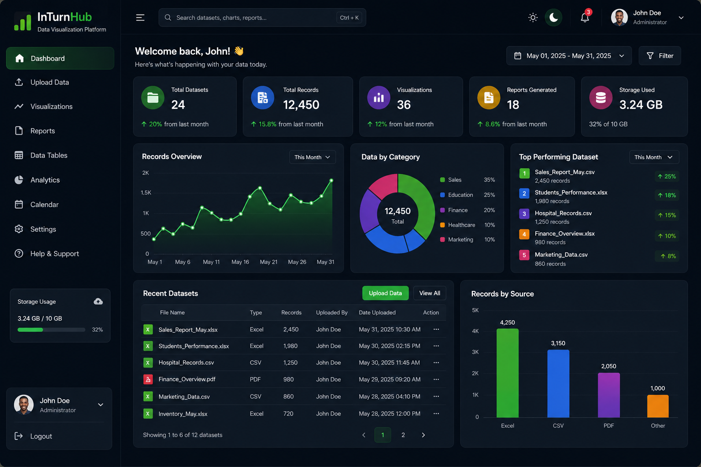

InsightHub – Universal Data Visualization Platform
A responsive web-based analytics platform that enables schools, hospitals, businesses, NGOs, and government organizations to upload datasets, generate interactive visualizations, and explore meaningful insights through an intuitive dashboard. Built with HTML, CSS, JavaScript, Chart.js, PapaParse, and SheetJS.